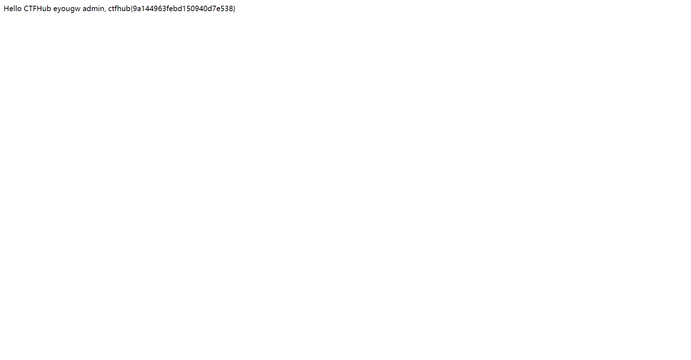

# WEB 学习 2023.10.23
# 信息泄露
# 备份文件下载
# PHPINFO
打开环境直接浏览器搜索 ctf 即可找到对应的 flag：
ctfhub{5deb0c24242cf420fed9cfa1}
# 网站源码
当开发人员在线上环境中对源代码进行了备份操作，并且将备份文件放在了 web 目录下，就会引起网站源码泄露。
# 0x01 提示
常见的网站源码备份文件后缀
- tar
- tar.gz
- zip
- rar
常见的网站源码备份文件名
- web
- website
- backup
- back
- www
- wwwroot
- temp
# 0x02 使用 dirsearch 查找
使用以下命令：
dirsearch -u http://challenge-c3d0a76d9273c7c1.sandbox.ctfhub.com:10800/ |
可得：
直接下载文件 www.zip 并进行解压：
# 0x03 二次隐藏
得到一个名为 flag_33496031.txt 的文件，打开之后并没有 flag，重新在网站中查找相关信息：
http:/flag_33496031.txt |
得到 flag： ctfhub{77f725d5968d87ba19a72640}
# bak 文件
# 0x01 提示
当开发人员在线上环境中对源代码进行了备份操作，并且将备份文件放在了 web 目录下，就会引起网站源码泄露。
# 0x02 题目
# 0x03 使用 dirsearch 进行查找：
找到了一个 bak 文件，进行下载，使用记事本打开，即可获得 flag
ctfhub{93f00169cf75b69bd006441b}
# vim 缓存
# 0x01 提示
当开发人员在线上环境中使用 vim 编辑器，在使用过程中会留下 vim 编辑器缓存，当 vim 异常退出时，缓存会一直留在服务器上，引起网站源码泄露。
# 0x02 题目
# 0x03 方法一 ：使用 dirsearch 延时查找
dirsearch -u http://challenge-f8ac603be2129fb8.sandbox.ctfhub.com:10800 -s 1 # 延时1秒

# 0x04 方法二：了解相关文件名
vim 在运行过程中会产生 swp 文件，如果程序异常退出 swp 文件可能被保留，第二次异常就变成 swo，第三次变成 swn。按照上题的思路，在原题 url 中加入 .index.php.swp ，文件名的最前面要有一个 “.”。
下载文件 .index.php.swp ，打开进行查找：
flag 为 ： ctfhub{70e0afb290e77337cb06d325}
# .DS_Store
# 0x01 提示
.DS_Store 是 Mac OS 保存文件夹的自定义属性的隐藏文件。通过.DS_Store 可以知道这个目录里面所有文件的清单。
# 0x02 题目
# 0x03 解
直接访问：
http://challenge-24627cb979c9f911.sandbox.ctfhub.com:10800/.DS_Store |
或者使用 dirsearch 可以得知，网站可访问 .DS_Store
dirsearch -u http://challenge-24627cb979c9f911.sandbox.ctfhub.com:10800/ -s 1 |
下载该文件，并使用记事本打开：
得到 6453df75efb4542d8ba3dc7d4ab53fc2.txt 就是我们需要二次访问的文件地址
访问得到 flag
http://challenge-24627cb979c9f911.sandbox.ctfhub.com:10800/6453df75efb4542d8ba3dc7d4ab53fc2.txt
ctfhub{83d1b8a015ecfa71c468b5e3}
# Git 泄露
# Log
# 0x01 提示
当前大量开发人员使用 git 进行版本控制，对站点自动部署。如果配置不当，可能会将.git 文件夹直接部署到线上环境。这就引起了 git 泄露漏洞。请尝试使用 BugScanTeam 的 GitHack 完成本题
# 0x02 题目

# 0x03 解答
根据提示使用 GitHack 工具对网站的 .git 文件进行处理
python2 GitHack.py http://challenge-87d743a3ff8b665c.sandbox.ctfhub.com:10800/.git |
之后我们 cd 进入到克隆的文件夹中，使用 git log 查看 git 的历史记录：
git log |
可以看到，最近的一次操作是将 flag 移除了，为了得到 flag 我们需要回退到 add flag 那个分支上。
git reset --hard HEAD^
也可以使用
git diff HEAD^
通过比较两个版本的不同，也可以得到正确答案。
此时就可以查看到 flag 文件了
ctfhub{003a15e85e08f988da3d91b7}
# Stash
# 0x01 提示
当前大量开发人员使用 git 进行版本控制，对站点自动部署。如果配置不当，可能会将.git 文件夹直接部署到线上环境。这就引起了 git 泄露漏洞。请尝试使用 BugScanTeam 的 GitHack 完成本题
# 0x02 题目
# 0x03 解答
git stash 用法
git stash （git 储藏）会把所有未提交的修改（包括暂存的和非暂存的）都保存起来，用于后续恢复当前工作目录。
git stash list //查看现有stash
git stash pop //恢复之前缓存的工作目录
首先使用 GitHack 得到 git 文件夹
python2 GitHack.py http://challenge-fb9e5bf47ae06169.sandbox.ctfhub.com:10800/.git
进入文件夹，使用 git stash list 查看现有的 stash
再使用 git stash pop 恢复之前缓存的工作目录
得到我们需要的 flag 所在的文件，获取即可
ctfhub{5bf4e75c6fa8396319a1a39a}
# Index
# 0x01 提示
当前大量开发人员使用 git 进行版本控制，对站点自动部署。如果配置不当，可能会将.git 文件夹直接部署到线上环境。这就引起了 git 泄露漏洞。请尝试使用 BugScanTeam 的 GitHack 完成本题
# 0x02 题目

# 0x03 解答
本题感觉没什么特别的，使用 GitHack 直接对 git 文件进行提取，在文件夹中直接查看 log 就可以得知当前状态就是含有 flag 的状态，直接获取 flag 文件即可
ctfhub{8197e9362ebfd50e1be1e9bf}
# SVN 泄露
# 0x01 提示
当开发人员使用 SVN 进行版本控制，对站点自动部署。如果配置不当，可能会将.svn 文件夹直接部署到线上环境。这就引起了 SVN 泄露漏洞。
# 0x02 题目
# 0x03 解答
首先使用 dirsearch 进行一下内容查看
dirsearch -u http://challenge-a61e31b7c2e824c9.sandbox.ctfhub.com:10800/ -s 1
发现了 svn 文件
我们在 kali 中，使用 dvcs-ripper 中的 rip-svn.pl 脚本进行 clone：
perl rip-svn.pl -u http://challenge-5849ad3280c96ef4.sandbox.ctfhub.com:10800/.svn
使用 ls -al 查看新增加的文件
前往 .svn 文件夹内
可以发现 wc.db 文件在其中，使用如下命令，查找有关 flag 的内容
cat wc.db | grep -a flag
发现 flag 但是如果直接访问会发现不存在
转而寻找 .svn/pristine/ 中的文件
可以发现有两个字典 bf 和 64
使用 cat bf/bf45c36a4dfb73378247a6311eac4f80f48fcb92.svn-base 得到：
我们在数据库中可以找到对应关系：
可以发现，第一个开头是 bf 的，对应的正是 index.html，那么我们只要使用 下方 64 开头的进行字典对应，就可以获得 flag：
ctfhub{9120bf8882d07e7ccafa434f}
# 0x04 备注
可以直接使用 tree .svn 查看其中的关系
# HG 泄露
# 0x01 提示
当开发人员使用 Mercurial 进行版本控制，对站点自动部署。如果配置不当，可能会将.hg 文件夹直接部署到线上环境。这就引起了 hg 泄露漏洞。
# 0x02 题目
# 0x03 解答
首先使用 dirsearch 进行文件检索
dirsearch -u http://challenge-1bc16caa950039f9.sandbox.ctfhub.com:10800/ -s 0.5
发现了 .hg 文件，尝试访问 dirstate 文件，下载下来，打开后发现：
flag_2785532634.txt 文件，对其进行访问就可以拿到 flag 了：
ctfhub{ec974c7b92f1ba4fceb75f44}
# 密码口令
# 弱口令
# 0x01 提示
通常认为容易被别人（他们有可能对你很了解）猜测到或被破解工具破解的口令均为弱口令。
# 0x02 题目
# 0x03 Burp Suite Intruder 的 4 种攻击类型
# ** Sniper（狙击手模式）**
狙击手模式使用一组 payload 集合，它一次只使用一个 payload 位置，假设你标记了两个位置 “A” 和 “B”，payload 值为 “1” 和 “2”，那么它攻击会形成以下组合（除原始数据外）：
| attack NO. | location A | location B |
|---|---|---|
| 1 | 1 | no replace |
| 2 | 2 | no replace |
| 3 | no replace | 1 |
| 4 | no replace | 2 |
# Battering ram（攻城锤模式）
攻城锤模式与狙击手模式类似的地方是，同样只使用一个 payload 集合，不同的地方在于每次攻击都是替换所有 payload 标记位置，而狙击手模式每次只能替换一个 payload 标记位置。
| attack NO. | location A | location B |
|---|---|---|
| 1 | 1 | 1 |
| 2 | 2 | 2 |
# Pitchfork（草叉模式）
草叉模式允许使用多组 payload 组合，在每个标记位置上遍历所有 payload 组合，假设有两个位置 “A” 和 “B”，payload 组合 1 的值为 “1” 和 “2”，payload 组合 2 的值为 “3” 和 “4”，则攻击模式如下：
| attack NO. | location A | location B |
|---|---|---|
| 1 | 1 | 3 |
| 2 | 2 | 4 |
# Cluster bomb（集束炸弹模式）
集束炸弹模式跟草叉模式不同的地方在于，集束炸弹模式会对 payload 组进行笛卡尔积，还是上面的例子，如果用集束炸弹模式进行攻击，则除 baseline 请求外，会有四次请求：
| attack NO. | location A | location B |
|---|---|---|
| 1 | 1 | 3 |
| 2 | 1 | 4 |
| 3 | 2 | 3 |
| 4 | 2 | 4 |
# 0x04 解题
解决本题需要使用 Burp 的暴力破解功能，首先随意输入一些内容，进行登录，在 Burp 中可以看到 request 请求：
右键 send to intruder / 快捷键 CTRL+I 发送到 intruder 中
在 Intruder 中在密码部分设置为 payload 添加 符号，作为注入点
选择密码本进行攻击，多尝试几个密码本就可以找到密码，可以看到，正确登录后的返回长度 2658 和其他长度不一样
双击查看 response：
得到 flag： ctfhub{4fbf4b5cf53ff19625acad4f}
# 默认口令
# 0x01 提示
# 0x02 题目
# 0x03 解答
题目提示默认口令说明此题的账户密码是网关默认密码，最后通过以前收集到的常用默认弱口令发现账户密码，获得此题 flag 。
浏览器搜索 eyou网关默认密码 ，检索可用信息发现使用说明手册，可能含有默认密码
输入默认用户和密码即可进入，取得 flag

ctfhub{9a144963febd150940d7e538}